Grafana Guide: Create an Alert Rule
|
This content was generated with the assistance of AI and should be verified against the official documentation before being relied on in production. |
Checked on 2026-11-11 against Grafana 13.3.x.
What you build
You create a Grafana-managed alert rule named Guide high 5xx ratio that fires when more than 20 percent of the requests answered by the Bookshelf
service end with a 5xx status. The rule lives in the folder Guides, is evaluated every minute by the group guide-eval, waits one minute in the
state Pending before it fires, and sends its notification to a webhook contact point called guide-webhook. You then break the Bookshelf service
on purpose with the load generator and watch the rule change state.
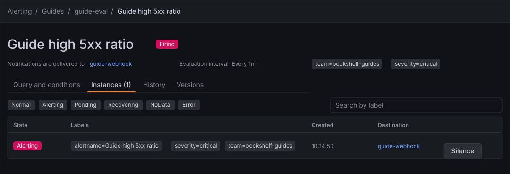
Before you start
-
Start the Grafana profile of the hands-on lab and wait about a minute:
cd lab docker compose --profile grafana up -d -
Open http://localhost:3000, sign in as
adminwith the passwordadmin, and click Skip when Grafana 13.3 asks you to update the default password. -
Do the previous guide, Reuse, versions and sharing, or at least Create a dashboard and the first panel, which creates the folder Guides and the dashboard Bookshelf (guides) used here.
-
The data source Prometheus is provisioned by the lab. The load generator is in its default mode,
normal, which answers with the status codes200and404only. Check it withcurl localhost:8090/. -
The lab also provisions its own alert rules in the folder bookshelf, with their own contact point
bookshelf-webhook. They react to the same failure you provoke later and deliver to the receiver path/grafana. The rule and the contact point you create here are separate from them and deliver to/guide, so you can tell the two apart. -
The guide was checked on Grafana Enterprise 13.3.0 (the free image, no licence key). Creating alert rules and contact points needs the Editor or Admin role of the organization;
adminhas it. -
The figures are drawings of the Grafana 13.3 user interface, not screenshots, so small details can differ from your screen. A highlighted box with a number marks the control of the step with the same number.
Steps
The rule is built on one long form that has six numbered sections. The map shows them in order; the steps below follow the same order and come back to the form section by section.
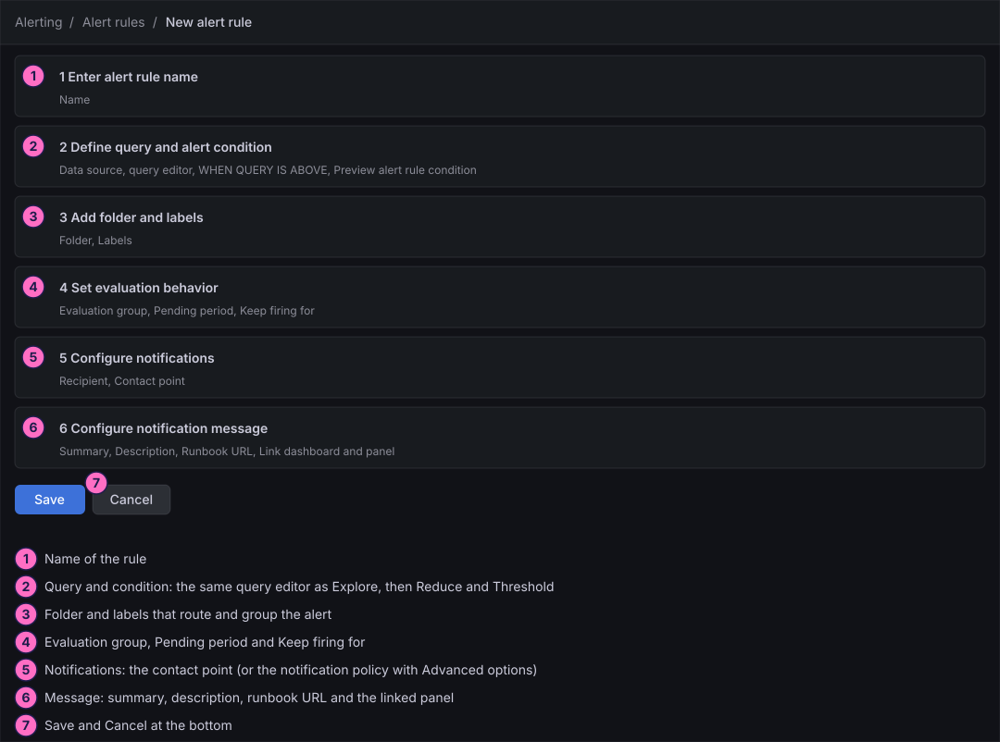
Create the contact point
A rule needs somewhere to send its notifications. The provisioned contact point is shared with the lab’s own rules, so you create a small one of your own first. The later guide Send notifications reuses it and goes through templates, policies and the test button in detail.
-
In the left navigation, click Alerting → Notification configuration.
-
On the Contact points tab, click New contact point.
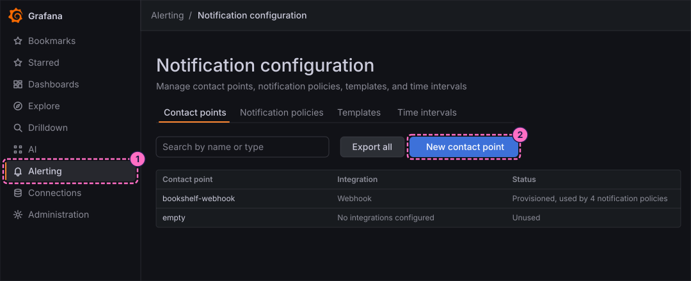
-
In Name, type
guide-webhook. -
Open the Integration picker (it shows Email first) and choose Webhook.
-
In URL, type
http://webhook-receiver:8080/guide. The address is the one of the lab’s webhook receiver as seen from inside the Docker network. -
Click Save contact point.
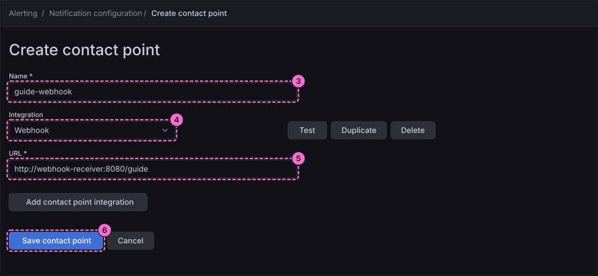
Open the rule form
-
In the left navigation, click Alerting → Alert rules.
-
Click New alert rule at the top right. The + button of the top bar offers the same entry under Alerting.
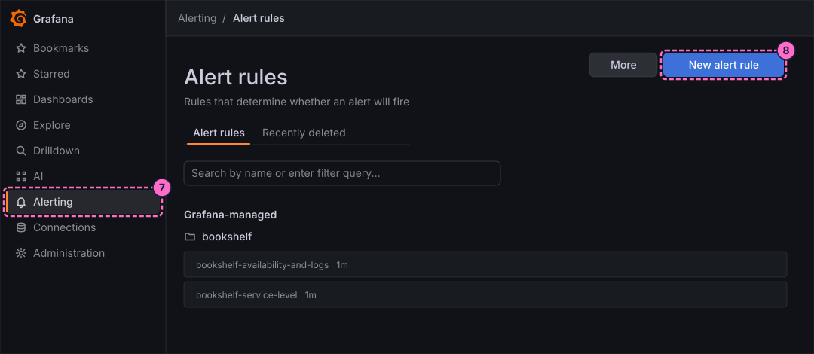
Name the rule and write the query
-
In section 1 Enter alert rule name, type
Guide high 5xx ratioin Name. -
In section 2 Define query and alert condition, check that the data source picker shows Prometheus. If it shows another data source, open the picker and choose Prometheus.
-
In query A, click Code in the Builder / Code switch.
-
Click inside the query editor first, so that it has the focus, then type the query. It divides the request rate of the 5xx statuses by the rate of all requests, and the last part returns
0while there are no 5xx at all, so that the rule has a value instead of No data in normal mode:(sum(rate(http_server_requests_seconds_count{application="bookshelf",status=~"5.."}[1m])) / sum(rate(http_server_requests_seconds_count{application="bookshelf"}[1m]))) or vector(0)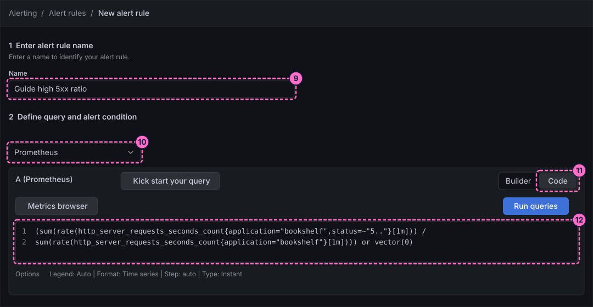
-
Under Alert condition, the condition reads WHEN QUERY IS ABOVE. Type
0.2in the value field at the end of the row. -
Click Preview alert rule condition. The preview shows the current value, which is
0in normal mode, so the condition is not met.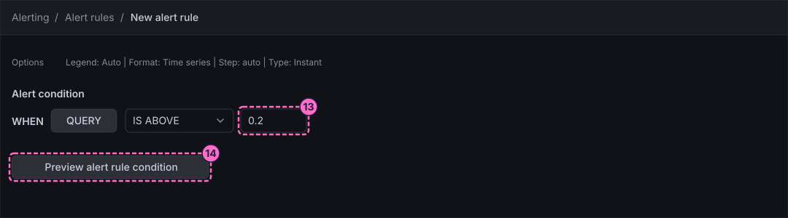
Choose the folder, the labels and the evaluation
-
In section 3 Add folder and labels, open the Folder picker and choose Guides.
-
Click Add labels and add two labels:
teamwith the valuebookshelf-guidesandseveritywith the valuecritical. Use the dialog that opens to choose the key and the value of each label and confirm it.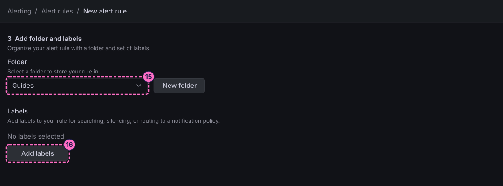
-
In section 4 Set evaluation behavior, click New evaluation group. Name the group
guide-evaland set its evaluation interval to1m, then confirm the dialog. The rule is evaluated once a minute from then on. -
Open the Pending period picker and choose
1m. A condition must stay true for a whole minute before the rule fires; the time before that is the Pending state. Leave Keep firing for at None.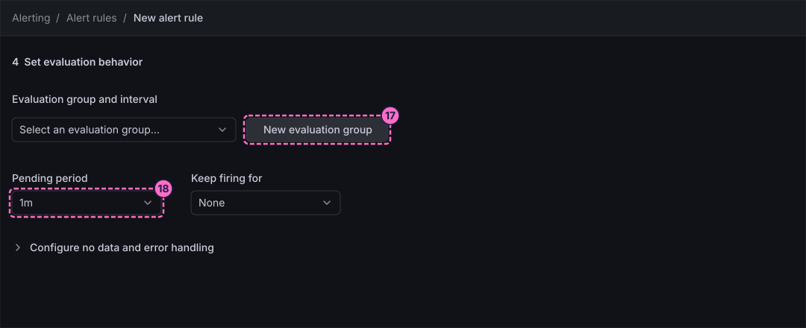
Choose the contact point and write the message
-
In section 5 Configure notifications, leave Recipient on
Alertmanager:grafana, open the Contact point picker and chooseguide-webhook.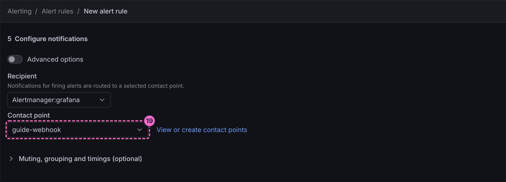
-
In section 6 Configure notification message, type this template in Summary (optional). It prints the value of the Reduce step, with two decimals, when the rule fires:
5xx ratio is {{ printf "%.2f" $values.B.Value }} -
In Runbook URL (optional), type
https://example.com/runbooks/high-5xx. -
Click Link dashboard and panel and choose the dashboard Bookshelf (guides) and its panel Requests per second by status. The notification then carries links to them.
-
Click Save at the bottom of the form.
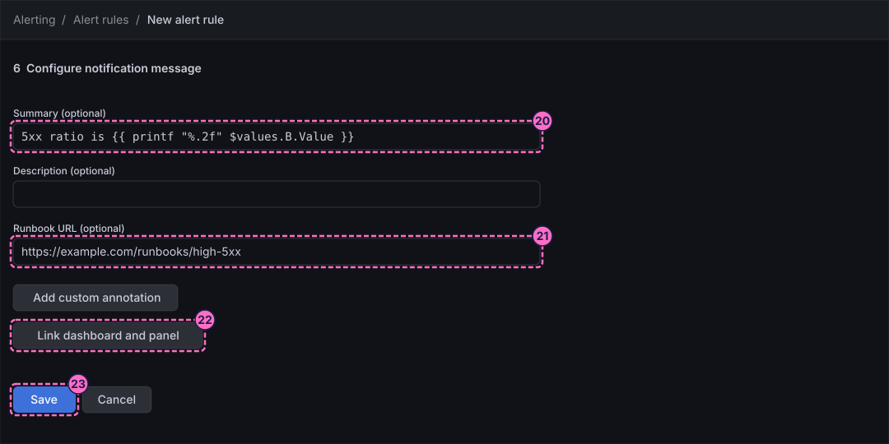
Watch the rule change state
-
Open Alerting → Alert rules, expand the folder Guides and click the rule Guide high 5xx ratio. The header shows the state Normal.
-
Click the Instances tab.
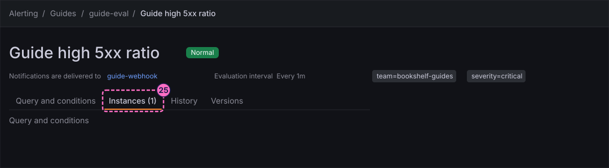
-
In a terminal, switch the load generator to its failing mode, so that the Bookshelf service answers with errors:
curl -X POST localhost:8090/mode/failing -
Reload the page now and then. After less than a minute (35 seconds in the check run) the instance changes to Pending and the header badge turns orange. The rule has seen the condition true once and now waits for the pending period.
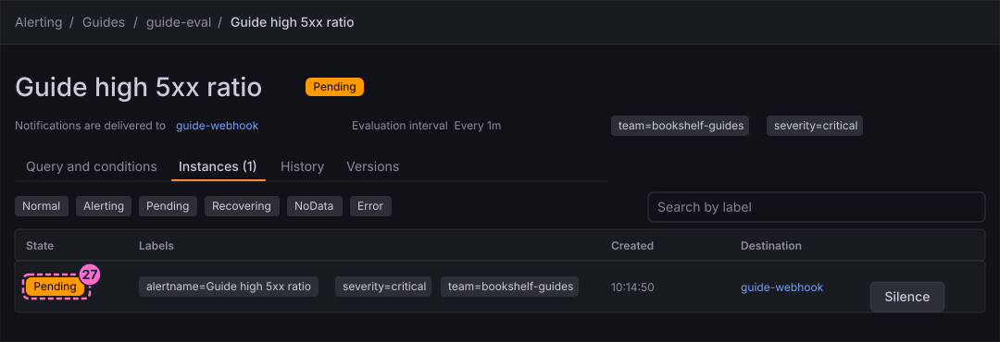
-
One minute later, the length of the pending period, the instance changes to Alerting (the header badge reads Firing). Grafana now sends a notification to the contact point.
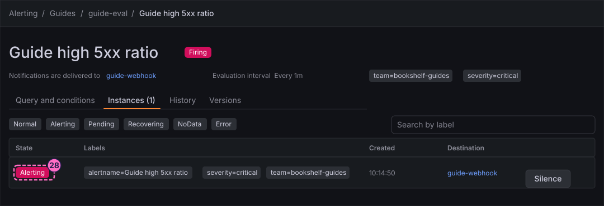
-
About 30 seconds after the rule fires, ask the webhook receiver what it has received. The list holds an entry with the path
/guide, which is your rule; entries with the path/grafanacome from the provisioned lab rules, which react to the same failure:curl -s localhost:8081 -
Restore normal traffic:
curl -X POST localhost:8090/mode/normal
Create a rule from a panel
A panel that already draws the metric is a quicker starting point than the blank form. This last part only shows where it starts, and keeps nothing.
-
Open Dashboards → Guides → Bookshelf (guides) and click Edit.
-
Click the panel Requests per second by status to select it, then click Edit visualization in the Panel pane of the right sidebar.
-
At the bottom of the panel editor, click the Alert tab. The tab only exists once the dashboard has been saved, which the first guide did.
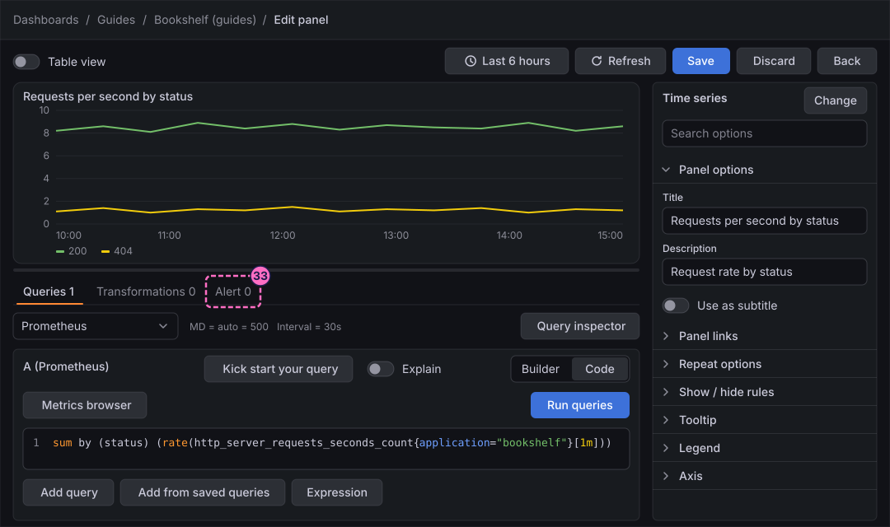
-
Use the button of the tab that creates an alert rule from the panel. Grafana opens the same New alert rule form with the query of the panel already filled in. Stop here and click Cancel at the bottom of the form, so that no second rule is created.
-
Click Back, then Exit edit. If the dialog Unsaved changes appears, click Discard, because you changed nothing.
Check the result
Open the rule Guide high 5xx ratio while the load generator is in failing mode, as in steps 26 to 28: the header must read Pending and later Firing, and the webhook receiver must list an entry with the path /guide and a title that starts with [FIRING:1] Guide high 5xx ratio.
After you restore normal traffic with curl -X POST localhost:8090/mode/normal, the rule returns to Normal after about a minute and a half, because the one minute rate window of the query must drain first.
The instance can show the state Recovering on the way. The notification that the alert is resolved arrives at the receiver about five minutes after the firing one, because the default notification policy of Grafana sends updates to a group every five minutes.
The History tab of the rule and Alerting → History list every state change, with a timestamp.
Variations
-
Switch on Advanced options in section 2 to see what the simple condition builds for you: a Reduce step that takes the last value of the query (function Last, input A) and a Threshold step that tests it (Is above
0.2). The summary template reads the value of the Reduce step as$values.B.Value. -
Use a longer Pending period such as
5mto ignore short spikes, or Keep firing for to avoid an alert that flaps. The reference page on rule states explains both. -
Switch on Advanced options in section 5 to choose Use notification policy instead of a contact point. The labels of section 3 then decide where the alert is routed, as the guide on notifications shows.
What can go wrong
| Symptom | Cause | Fix |
|---|---|---|
The rule shows No Data instead of Normal in normal mode |
The query returns nothing while there are no 5xx at all, and the rule has no default value. |
Keep the part |
The rule stays Normal after |
The load generator is not in failing mode, or the evaluation has not run yet, or Prometheus has few samples because the lab started a moment ago. |
Check the mode with |
The rule fires but nothing arrives at |
The contact point has another URL, or the notification is still waiting for the group wait of the notification policy, which is about 30 seconds. |
Open the contact point in Alerting → Notification configuration, check the URL |
The receiver lists entries with the path |
The provisioned lab rules react to the same failure and use the contact point |
Ignore them, or read only the entries with the path |
The folder picker does not list Guides |
The first-steps guide was skipped. |
Create the folder with Dashboards → New → New folder and open the form again. |
Clean up
Keep the rule and the contact point: the following guides send notifications and silence alerts with them. If the load generator is still in failing mode, restore it with curl -X POST localhost:8090/mode/normal.
To remove the rule, open it in Alerting → Alert rules and use the More menu of its page; to remove everything the lab stores, stop the profile with docker compose --profile grafana down -v, which also deletes the volumes.
Where to go next
-
Previous guide: Reuse, versions and sharing.
-
Next guide: Send notifications, which tests the contact point, adds a template and routes alerts with a notification policy.
-
Reference: Alert Rules, Queries and Conditions describes the form and the Reduce and Threshold expressions.
-
Reference: Rule Evaluation, States and Missing Data explains Pending, Firing, Recovering, No Data and Error.
-
Reference: Labels, Annotations and Rule Templates covers the summary template and the labels used here.